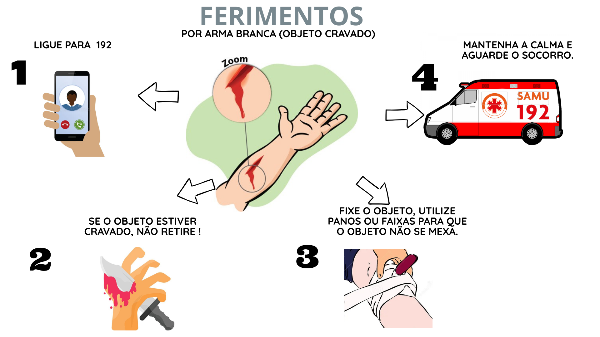

Clique Salve
Ferimentos e Lesões
Aprenda como prestar primeiros socorros em ferimentos e lesões.

Ferimentos em geral — limpe com água, aplique pressão para estancar sangue.
Ferimentos graves — mantenha pressão constante e imobilize a área afetada.
Sangramento intenso — eleve o membro afetado e procure ajuda médica imediatamente.
O que fazer em caso de ferimentos
Ferimentos leves:
Lave o ferimento com água corrente e sabão suave.
Seque com uma toalha limpa.
Aplique desinfetante (álcool 70% ou água oxigenada).
Cubra com gaze ou curativo se necessário.
Ferimentos com sangramento moderado:
Aplique pressão direta com gaze limpa por 10-15 minutos.
Se sangrar muito, não remova o primeiro curativo — coloque outro por cima.
Eleve o membro afetado acima do coração para reduzir sangramento.
Limpe suavemente com água morna quando o sangramento parar.
Procure atendimento médico se continuar sangrando após 15 minutos.
Ferimentos graves/sangramento intenso:
Ligue para SAMU imediatamente (192).
Aplique pressão forte e contínua com pano limpo ou faixa.
Se possível, eleve o membro afetado.
Mantenha a vítima deitada e aquecida.
Não remova objeto cravado — estabilize-o apenas.
Ferimentos com sensibilidade comprometida:
Procure atendimento médico — pode indicar lesão de nervo.
Mantenha a área limpa e protegida.
Evite movimentos bruscos.
Ligar para SAMU
Voltar
×
Voltar